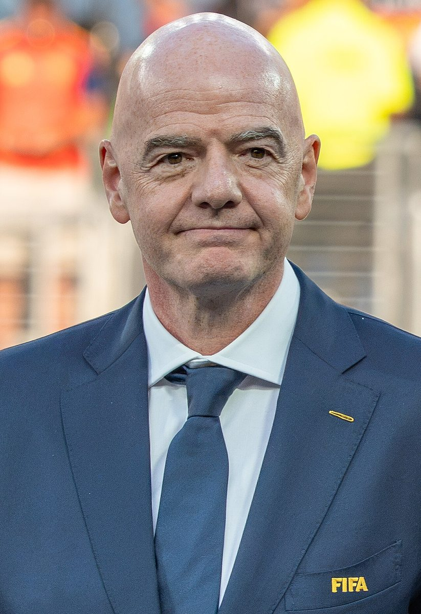

Japan's Kozo Tashima to Challenge Gianni Infantino for FIFA Presidency
The former Japan Football Association president, now its honorary president, says he wants to bring Japanese football's 'sincerity, integrity and high ethical standards' to world football.

Kozo Tashima, the honorary president of the Japan Football Association (JFA), will stand against Gianni Infantino in the FIFA presidential election in March, he announced on Thursday, 5 November.
Tashima, 68, led the JFA from 2016 to 2024 and has served on the FIFA Council. "With the full support of the JFA I have decided to declare my candidacy in the FIFA presidential election," he said, according to Al Jazeera.
A challenge after a difficult year for Infantino

Infantino, 56, has led FIFA since 2016 and is seeking a fourth term. He has faced criticism since July, when a plan to bring private investors into a new FIFA commercial company failed. The company was designed to hold the rights to major competitions, including the World Cup, and critics said it put commercial interests ahead of the sport, The Guardian reported.
Infantino has dismissed calls to step down and says he has the backing of the "vast, vast majority" of FIFA's member associations. Last month the Asian Football Confederation, which includes Japan, endorsed him for another term.
Tashima is the second challenger. Former Switzerland and Tottenham defender Ramon Vega declared his candidacy first. Candidates have until 18 November to enter.
Japan's reputation as his pitch
Japanese football is known internationally for its conduct as well as its results. Players bow to the crowd after matches, and Japanese fans have been praised for cleaning the stands at World Cups in Russia and Qatar.
Tashima says he wants to share that approach. He said it is important that Japanese football's "sincerity, integrity and high ethical standards" are communicated to the global football community, and that he will take on the challenge "with firm resolve". Speaking to the newspaper Sports Nippon, he described the aim as conveying the "honest, sound and upright attitude" of Japanese football, according to The Guardian.
What is at stake
The FIFA president leads the organisation that runs the World Cup, distributes development funding to more than 200 national associations and oversees the governance of the game. For associations in Asia, Africa and other developing football regions, that funding and representation are central.
Supporters of FIFA's commercial plans say new revenue can be reinvested in the game. Critics fear that grassroots football will be overlooked if the focus shifts to private investment and media rights.
Each member association has one vote. With his own confederation already backing Infantino, the result in March will show how much support Tashima can build in Asia and beyond.